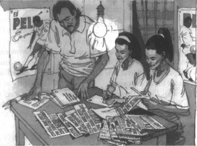

Listen to Part 1:
Palito đã viết thư cho giám đốc Bahia Central và ông ấy đồng ý chờ. Pedro cũng có một cuộc trò chuyện dài với một người bạn của Palito. Người bạn này tên là Claudio. Anh làm phóng viên cho một tờ báo.
Một tuần sau, có một bức ảnh của Palito trên trang thể thao của tờ báo. Phía trên bức ảnh là dòng chữ:
Dưới bức ảnh, có một bài viết về Palito. Claudio đã viết bài báo này.
Claudio viết: "Palito hiện tại đã rất giỏi". "Trong tương lai, cậu ấy sẽ còn xuất sắc hơn. Một ngày nào đó, cậu ấy sẽ trở thành cầu thủ bóng đá xuất sắc nhất Brazil".
Tối hôm đó, Pedro về nhà sớm. Anh mang theo mười bản báo. Anh cũng đã mua mười chiếc phong bì lớn.
Pedro hét: "Fernanda, Odete, vào đây! Bố cần các con giúp".
Hai cô bé vội vàng chạy vào.
Pedro nói với Fernanda: "Fernanda, bố có việc cho con làm đây. Cắt bài báo này ra khỏi các tờ báo. Còn Odete, chữ con đẹp nhất. Con sẽ ghi địa chỉ lên phong bì. Bố sẽ đọc địa chỉ cho con".
Họ làm việc cùng nhau suốt đêm. Sáng hôm sau, Pedro đưa mười phong thư vào bưu điện. Các phong thư được gửi đến giám đốc của mười đội bóng giỏi nhất ở Rio và São Paulo. Trong mỗi phong bì, có một bản sao bài báo về Palito.

Listen to Part 2:
Tất cả mọi người ở Gloria đều sớm biết tin về những phong thư. Họ đều chờ đợi tin tức.
Fernanda nói với Odete: "Các giám đốc đội bóng sẽ lập tức bay đến đây". "Họ sẽ đề nghị Palito đến Rio hoặc São Paulo".
Nhưng chẳng có gì xảy ra. Nhiều tuần trôi qua mà vẫn không có tin tức.
Một số người bạn đã nói với Palito: "Cậu thật ngốc. Hãy nhận lời đề nghị của Bahia Central".
Palito chỉ cười.
Anh nói với bạn bè: "Hãy chờ mà xem".
Palito bận tập luyện cho một trận đấu quan trọng. Đội Corinthian sẽ thi đấu với Recife Rangers. Trận đấu này diễn ra hàng năm và có hàng nghìn khán giả đến xem. Trận đấu luôn được tổ chức tại Sân vận động Thành phố.
Tối hôm trước trận đấu, Palito đang ngồi ở nhà. Anh đang nói chuyện với cha mình. Đột nhiên, cánh cửa bị mở toang và Claudio chạy vào phòng. Anh nắm lấy tay Palito và kéo anh đứng dậy. Sau đó, anh nhảy vòng quanh phòng cùng Palito.
Pedro hét lên: "Claudio, có chuyện gì vậy?".
Claudio ngừng nhảy và nhìn Pedro và Palito.
Listen to Part 3:
Anh nói: "Có tin vui". "Tin tuyệt vời".
Fernanda, Odete và Maria đã đi vào trong lán.
Fernanda hét: "Có tin gì vậy". "Hãy nói cho chúng tôi biết tin đi".
Claudio trả lời: "Chico Perez sẽ đến đây bằng máy bay vào ngày mai". "Ông ấy là giám đốc của White Star. Ông ấy muốn xem Palito thi đấu".
Maria hỏi: "White Star là gì vậy?". "Đó là gì?".
Claudio trả lời: "White Star là một đội bóng ở São Paulo". "Trước đây, họ là đội bóng giỏi nhất Brazil. White Star từng là một trong những đội bóng giỏi nhất thế giới".
Pedro nói: "Đó là mười năm trước". "Bây giờ họ không còn giỏi như vậy nữa".
Claudio đồng ý: "Đúng vậy". "Nhưng Chico Perez là giám đốc mới của họ. Ông ấy đang cố gắng giúp họ trở thành một đội bóng tuyệt vời trở lại. Ông ấy đang tìm kiếm những cầu thủ trẻ, tài năng. Ông ấy đã tìm được một thủ môn và một tiền đạo. Bây giờ, ông ấy đang tìm kiếm một cầu thủ chạy cánh".
Tất cả mọi người đều im lặng trong giây lát. Họ quá ngạc nhiên. Maria lên tiếng trước.
Cô nói: "Ngày mai, Chico Perez sẽ đến Salvador".
Listen to Part 4:
Claudio nói: "Đúng vậy". "Ông ấy đến đây để xem Palito thi đấu. Maria này, cô nghĩ sao, tôi cho rằng ngày mai sẽ là một ngày quan trọng trong lịch sử bóng đá Brazil".